I've had several opportunities to travel overseas in my lifetime.
It all started when my dad was hired as an administrater at a small school in Calabar, Nigeria. I was 11 years old at the time and wanted to explore a new country, so I accompanied him there for a year and attended the school where he worked. After
an incredible experience in Calabar, I knew I would jump at any other chance to travel while I was still young. That opportunity came during the summer before ninth grade, when my mom brought up the idea of taking a sort of "gap year" and traveling
in Europe. The suggestion came at the perfect time, as my oldest sister would be starting college in Dublin, Ireland that coming fall, giving me, my mom, and my 16-year-old sister an excuse to visit her while also exploring the rest of the continent.
Though the idea of spending a year overseas during my first year of high school seemed crazy at first, hypothetical conversations soon turned into logistical discussions. We first received permission from my high school in Wilton to earn credit
for the academic year through an online school program, the University of Nebraska Online High School. Then, we planned our trip intinerary: Ireland to visit my sister, followed by Spain, Italy, France, and Belgium. After months of planning, the
trip itself felt like a dream. We visited several cities in each country, staying mostly in Airbnb's, but sometimes in budget hotels or hostels. Each day included visits to historic sites or museums, conversations with our Airbnb hosts or people
we ran into, and hours of walking around in order to get to know a particular city's culture. Having since returned to Wilton High School for sophomore, junior, and senior year, I can confidently say that my experiences traveling have enriched
my worldview, especially since I've been able to travel at such an impressionable age. Below, I've detailed the places I've visited and what I've learned from each.
Nigeria
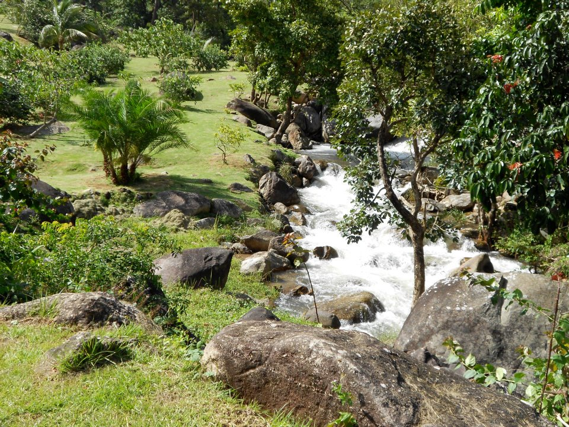
A flowing waterfall in Obudu, Nigeria.
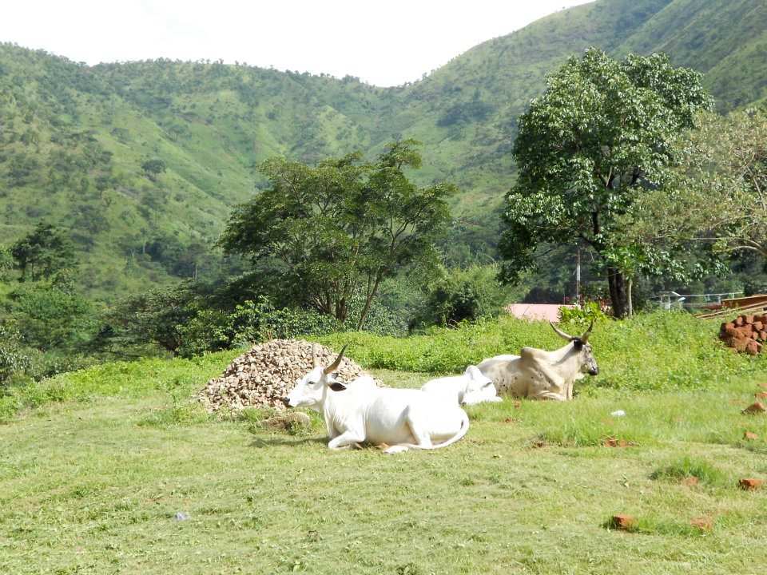
Cattle grazing outside of the city.
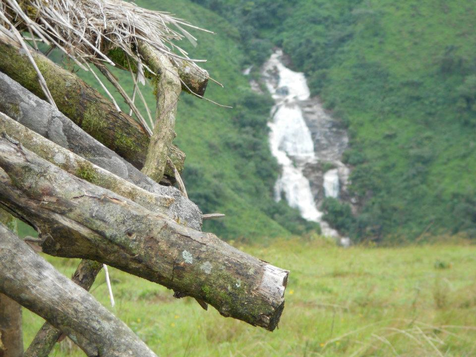
View of a waterfall from a hut in Obudu.
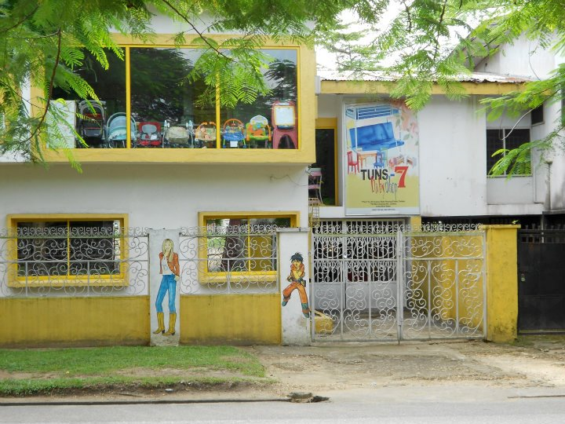
One of Calabar's many colorful buildings.
Calabar is a city in southern Nigeria near the border of Cameroon. I lived there beginning in the middle of fifth
grade and ending in the middle of sixth. The school I attended, Surefoot International School, had around 8-20 students in each grade. In many
ways, it was similar to my school back in Connecticut; students took the core math, english, social studies, science, and world language classes,
along with art and PE. However, I was also required to take a Christian religious education class, and I found that Christian values were
very prominent in my school and in my friends' daily lives. Other cultural differences made the adjustment to Nigerian life challenging, my classmates'
use of pidgin English being one of them. Once I could understand what they were saying, though, I made excellent friends and even attended
a weekly cooking class at my Kenyan friend's house, learning how to make traditional Kenyan meals. In school, I was able to keep up with violin
by taking music classes, and I also joined a traditional Indian dance group. Since returning to Connecticut in sixth grade, I've kept in touch
with the people I met in Calabar and hope to return to Nigeria someday.
Ireland
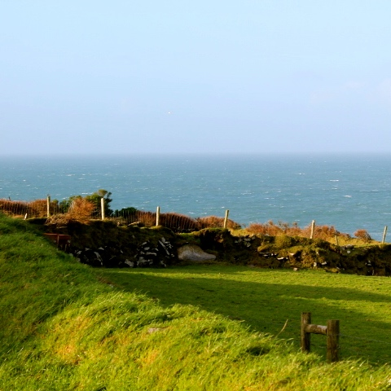
View of the sea in County Kerry, Ireland.
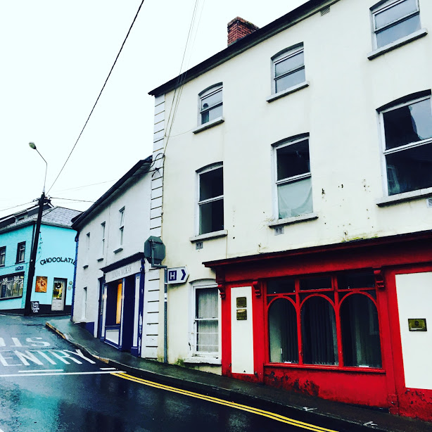
Typical building in Thomastown, Ireland.
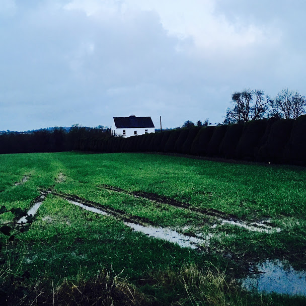
Green field in Kilkenny, Ireland.
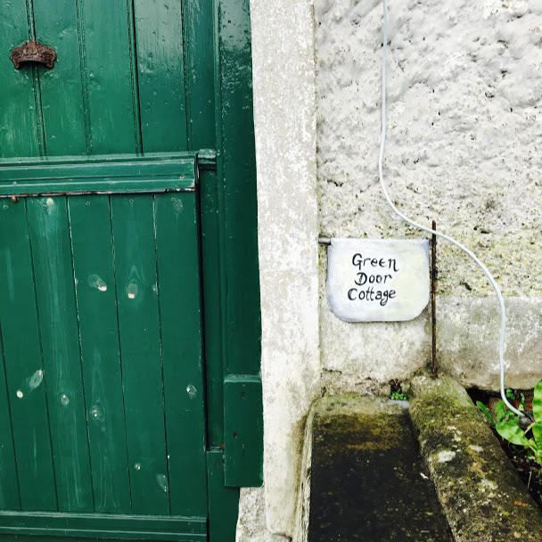
Quaint cottage in Thomastown, Ireland.
Our first stop in Ireland was Dublin, where we met up with my oldest sister at her college.
During our week in the city, we had the chance to visit Dublin Castle and Kilmainham Gaol to learn more about the history of Ireland.
After exploring Dublin, my mom, sister and I took a scenic train ride to Thomastown, our home for the next week. Thomastown is a very small, charming town
in County Kilkenny. During our time there, we visited a world-renowed craft studio and had tea with our
Airbnb hosts, who shared lots of knowledge about the area. Our next adventure took us further into the Irish countryside in County Kerry.
Staying in a drafty but beautiful Airbnb surrounded by fields of sheep, we hiked along cliffs overlooking the ocean and visited the
beehive huts of Slea Head, a UNESCO world heritage site. After a wonderful time in County Kerry, my whole family went on an Irish road trip, stopping in Galway,
Westport, and Belfast, where we spent a day at the Titanic museum. I loved Ireland for its kind people, fascinating historical sites, and
beautiful scenery.
Spain
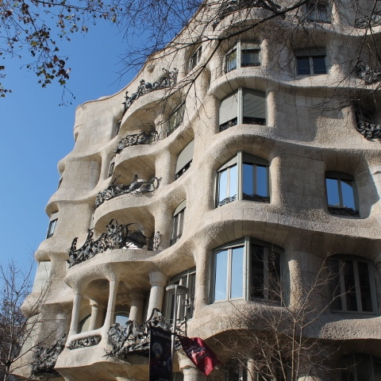
Antoni Gaudi building in Barcelona, Spain.
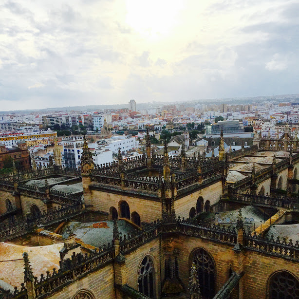
View from the Seville Cathedral in Seville, Spain.
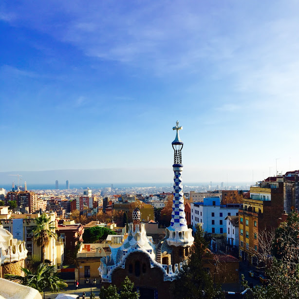
Parc Guell in Barcelona, Spain.
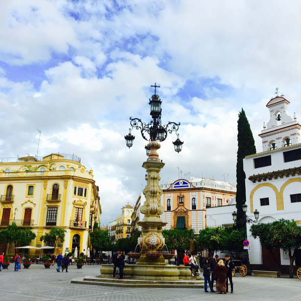
Beautiful square in Seville, Spain.
Our first destination in Spain was the lovely city of Seville. The mild weather and sunshine that greeted us
when we arrived was a nice change after a month of Irish rain! In Seville, we visited the Seville Cathedral, went to a flamenco performance,
and ate lots of tapas. We then headed to Ronda, a mountaintop city with incredible views. We took a walking tour of the city before driving to
Granada, where our most exciting destination was the Alhambra Castle. Our tour of the castle gave me an exciting sample of what I would
learn about Spanish history in my AP European History class the following year. Our next stop was Toledo, where we admired the Toledo Cathedral
and El Greco art collection. Finally, we drove to our northermost destination, Barcelona. There, we visited the Sagrada Familia and Parc Guell
while making time to stock up on food from La Boqueria market. Spain's fascinating history and culture as well as the interesting architecture
in each city made my time there deeply memorable.
Italy
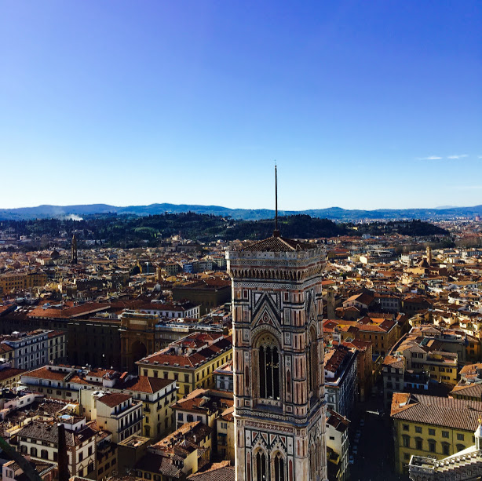
View from the Duomo in Florence, Italy.
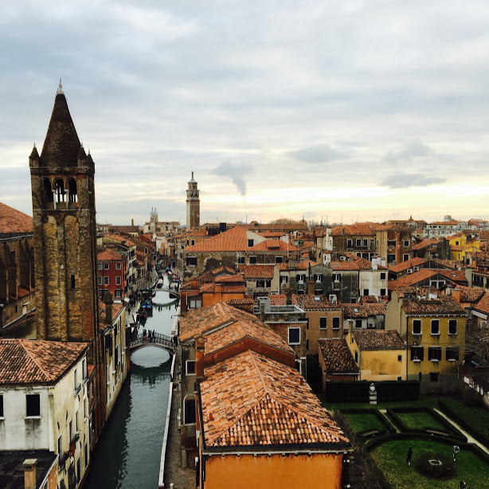
View from a museum window in Venice, Italy.
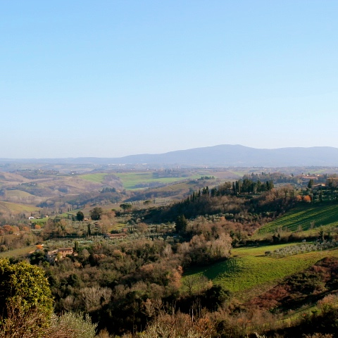
View of the Tuscan countryside.
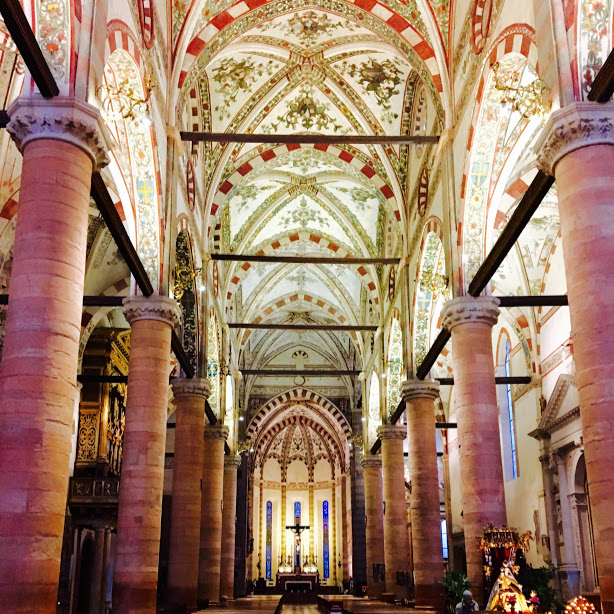
Verona Cathedral in Verona, Italy.
We only had a week in our first destination, Rome, so we tried to squeeze in everything we could: a visit to the Colosseum
and Roman Forum, a tour of the Sistine Chapel and St. Peter's Basilica, and a day in the Roman Ghetto where we toured the Jewish Museum. I loved
trying cacio e pepe for the first time in the neighborhood we stayed in, Trastevere, and having my fair share of gelato for dessert.
Next, we headed to Florence, where I enjoyed visting the Uffizi Gallery, the Galleria dell'Accademia, and the Duomo. One of the highlights of the trip to Europe as a whole was our guided tour of Tuscany, where we visited Siena and Pisa and ate
a traditional Italian meal at a Tuscan farm. Then, after a quick stop in Verona, we spent a wonderful week in Venice that included a tour of St.
Mark's Cathredral, an opera performance, and a good amount of time getting lost in the city streets. I had always wanted to visit Italy before
our trip, and the country exceeded my expectations with its amazing scenery, beautiful artwork, and delicious food.